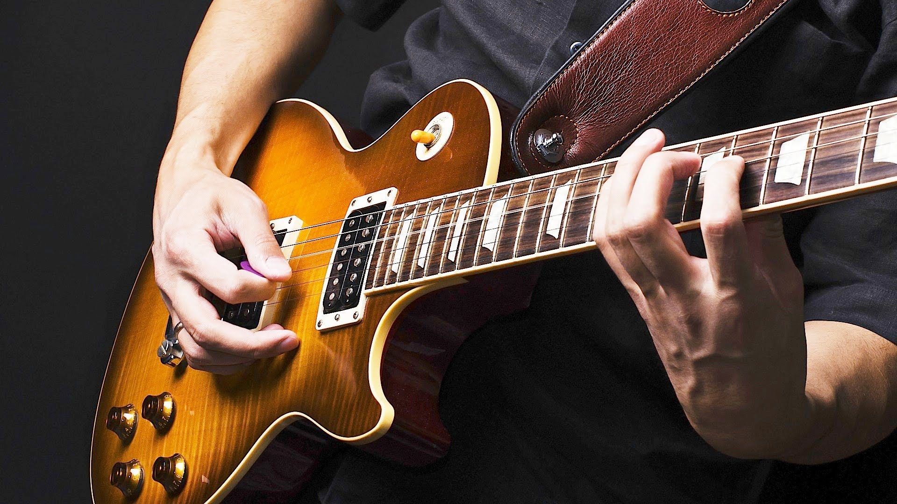
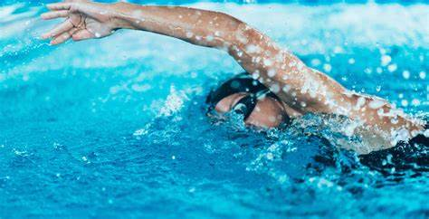

Hobbies:

Meus hobbies são uma mistura de criatividade, tecnologia e atividades físicas, refletindo meus diversos interesses e ajudando a equilibrar meu dia a dia. Tocar guitarra é uma das formas que encontrei para expressar minha criatividade musical. Gosto de aprender novos riffs e experimentar diferentes estilos musicais, o que me permite desligar um pouco do ritmo acelerado da rotina e entrar em um estado de fluxo.
Minha paixão por tecnologia é claramente refletida em meus projetos de robótica. Passo bastante tempo desenvolvendo novas ideias, desde montar robôs até criar componentes personalizados com minha impressora 3D. A impressão 3D é um dos meus maiores hobbies, pois permite que eu transforme minhas ideias em realidade, fabricando peças tanto para meus projetos de robótica quanto para outras criações do dia a dia. Adoro a sensação de ver algo que criei no computador tomar forma física.
 Quando se trata de relaxamento, jogar video-game é outra atividade que me atrai bastante. Gosto de explorar novos mundos virtuais, competir em jogos desafiadores e, às vezes, apenas me divertir com amigos.
Quando se trata de relaxamento, jogar video-game é outra atividade que me atrai bastante. Gosto de explorar novos mundos virtuais, competir em jogos desafiadores e, às vezes, apenas me divertir com amigos.

Além dos interesses tecnológicos, também valorizo muito o aspecto físico. A natação é uma paixão desde a infância, pratiquei essa modalidade do esporte por mais de 10 anos. É uma atividade que me ajuda a relaxar e ao mesmo tempo mantém meu corpo em movimento. A academia faz parte da minha rotina regular, onde me dedico a melhorar minha força e resistência, o que complementa bem meus outros hobbies, proporcionando equilíbrio entre corpo e mente.
Outra paixão minha é aprender e praticar idiomas. Tenho um gosto especial por falar alemão e inglês, o que não só amplia minha visão de mundo, mas também me conecta com diferentes culturas e oportunidades. A prática desses idiomas me ajuda a me manter desafiado e engajado, tanto no contexto acadêmico quanto no profissional.
Esses hobbies me permitem explorar diferentes áreas, do criativo ao técnico, e ao mesmo tempo manter uma vida ativa e saudável.